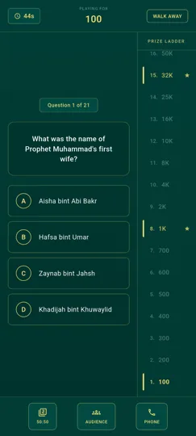
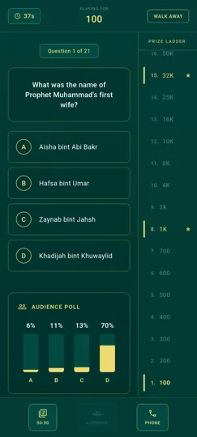
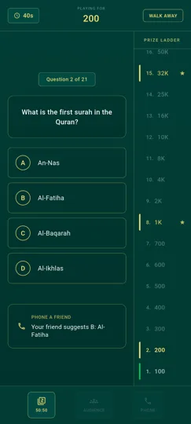

Un quiz pour apprendre en s'amusant
Le Quiz coranique de Noor Phonetic Quran s'inspire du format "Qui veut gagner des millions" : une série de questions sur le Coran, l'histoire islamique et les sourates, avec une échelle de gains qui augmente à chaque bonne réponse.
C'est une façon ludique de réviser ou de découvrir des connaissances sur le Coran, seul ou en famille, sans pression — vous pouvez vous arrêter à tout moment en gardant votre score.
Comment fonctionne le quiz ?
- Répondez à 21 questions — des questions à choix multiples de difficulté croissante sur le Coran et l'histoire islamique.
- Suivez l'échelle de gains — chaque bonne réponse vous fait progresser sur une échelle allant de 100 points à 1 million.
- Utilisez vos jokers — le 50:50 élimine deux mauvaises réponses, le sondage du public affiche l'avis des autres joueurs, et l'appel à un ami vous suggère une réponse.
- Arrêtez-vous quand vous voulez — le bouton "Walk Away" vous permet de conserver vos gains à tout moment plutôt que de risquer de tout perdre.
Aperçu du Quiz coranique



Questions fréquentes sur le Quiz coranique
Combien de questions comporte le quiz ?
Le quiz comporte 21 questions à choix multiples, avec une difficulté croissante au fil de la partie.
Que se passe-t-il si je réponds mal à une question ?
Selon votre progression, vous conservez le dernier palier de gains garanti atteint, comme dans le format "Qui veut gagner des millions".
Le quiz coranique est-il gratuit ?
Oui, le Quiz coranique fait partie des fonctionnalités gratuites de Noor Phonetic Quran.